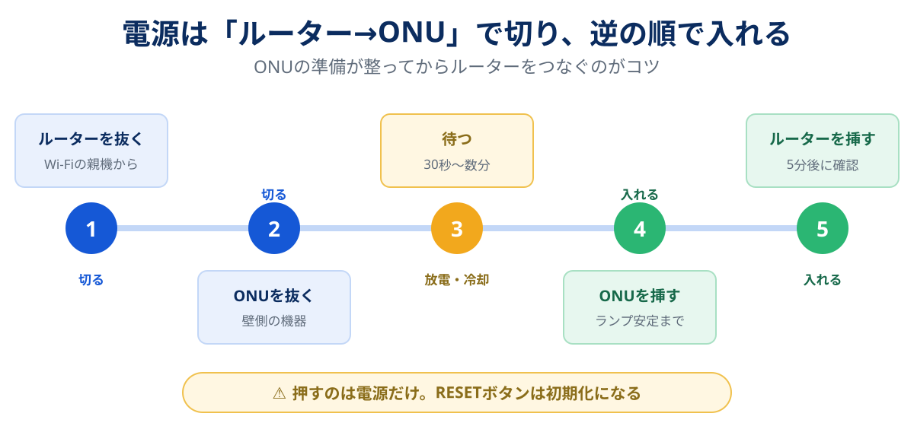

「ネットが遅い」「つながらない」と相談すると、まず返ってくるのが「ルーターを再起動してみて」という一言です。実際、NTT東日本の公式コラムも、つながらないときの対処の最初に「ルーター→ONUの順でコンセントを抜き、30秒以上置いてから、ONU→ルーターの順で挿す」手順を挙げています。NECのAtermシリーズには、決まった曜日・時刻に自動で再起動する「時刻指定再起動機能」まで用意されています。メーカー自身が、長時間の連続稼働で接続が不安定になることを前提にしているわけです。
一方で、再起動では直らない不調もはっきりあります。2024年8月にドコモのホームルーター「home 5G HR02」で圏外表示が続く不具合が起きた際、ドコモが案内した対処は再起動ではなくソフトウェア更新と、つながらない場合のRESETボタン10秒以上の長押し(初期化)でした。ONUの「認証」ランプが消えているときも、ルーターを何度再起動しても状況は変わりません。
この記事では、再起動がなぜ効くのかを仕組みから整理したうえで、ランプと症状から「再起動で直る不調か」を見分ける判定表、順番と待ち時間、機器ごとのやり方、そして再起動が必要になる頻度から機器の寿命や回線の限界を読む方法をまとめました。再起動を「おまじない」で終わらせず、次の一手を決める材料に変えるための記事です。
ルーターの再起動は、長時間の稼働でたまった一時的な不具合(メモリや接続情報の詰まり、熱、接続の取りこぼし)をリセットする効果があり、「昨日までは普通だったのに急に遅い・切れる」不調にはよく効きます。正しい手順はルーター→ONUの順に電源を抜き、30秒〜数分待って、ONU→ルーターの順に挿すこと。押すのは電源だけで、RESETボタン(初期化)は押さないのが鉄則です。反対に、ONUの認証・光回線ランプが消えている、毎晩同じ時間に遅い、90Mbps台で頭打ちといった不調は再起動では直りません。そして週に何度も再起動しないと保てないなら、それは機器の寿命か回線の限界のサインです。
スマホはどれ?再起動しても直らないなら:GMOとくとくBB光の条件を見る公式サイトへ →PR・申し込み前にキャッシュバックの受け取り条件を確認できます


再起動しても不調が続き、回線ごと見直したくなったら
住まいのタイプとスマホのセット割から、候補を数社まで絞り込めます。乗り換えにかかる総額も、特典込みで試算できます。
再起動で直る理由:リセットされる5つのもの
ルーターは小さなコンピューターです。CPUとメモリを積み、24時間休まずに家じゅうの通信を中継しています。再起動で直るのは、その「動かし続けたことでたまったもの」が原因の不調です。具体的には次の5つがリセットされます。
| リセットされるもの | たまると起きること | 再起動後にどうなるか |
|---|---|---|
| メモリ上の一時データ | 処理が重くなり、ページの読み込みが遅い・ときどき固まる | 空の状態から動き直すので、処理の詰まりが解消する |
| 通信の対応表(NATの接続記録) | 端末が多い家や、アプリの通信が多い家で、新しい接続が作れず一部のサイトやアプリだけつながらない | 記録が消えて、新しい接続を作れる状態に戻る |
| 回線側との接続情報 | プロバイダとの接続やIPアドレスの更新がうまくいかず、急に外へ出られなくなる | 接続をやり直し、アドレスを取り直す |
| Wi-Fiの電波の割り当て(チャネル) | 近所のWi-Fiと同じチャネルが混み合い、無線だけ遅い | 自動選択の設定なら、起動時に空いているチャネルを選び直す機種が多い |
| 本体の熱 | 夏場や棚の奥で熱がこもり、処理が落ちる・突然切れる | 電源を抜いて置いている間に温度が下がる(置き場所が同じなら再発しやすい) |
どれも「時間がたつとたまり、リセットすると消える」性質のものです。だから再起動は、昨日まで普通だったのに今日だけおかしい、という不調によく効きます。逆に言えば、いつでも同じように遅い、毎晩同じ時間に遅いといった不調は、たまったものが原因ではないので、再起動では変わりません。この区別が、次の判定表の土台になります。
なお、IPv6 IPoE(v6プラスなど)でIPv4のサイトを見る「IPv4 over IPv6」の環境では、1つのIPv4アドレスを複数の契約者で分け合う方式のため、利用者ごとに使える接続の数(ポート)に上限があります。端末やアプリが多い家で「特定のアプリやゲームだけつながらなくなり、再起動すると戻る」を繰り返すなら、この上限に近づいている可能性があります。接続方式の仕組みはIPv6(IPoE)とは?夜だけ遅い光回線を速くする方法で解説しています。
再起動で直る不調・直らない不調の判定表
再起動する前に、30秒だけ症状とランプを確認してください。「直らない側」の不調なら、再起動に時間を使うより先にやるべきことがあります。
| 症状・ランプの状態 | 再起動で | 考えられる原因と、先にやること |
|---|---|---|
| 昨日まで普通だったのに、急に遅い・ページが開かない | 直りやすい | メモリや接続情報の詰まり。まず再起動 |
| Wi-Fiにはつながっているのに「インターネットなし」 | 直りやすい | ルーターと回線側の接続が切れている。再起動で戻らなければ障害情報を確認 |
| 特定のアプリ・ゲームだけ急につながらない | 直ることが多い | 接続の記録の詰まり。繰り返すなら端末数や接続方式を見直す |
| スマホ1台だけつながらない(ほかは正常) | ルーターの再起動は不要 | スマホ側の問題。スマホのWi-Fiを一度オフにする、スマホ自体を再起動する |
| 毎晩20〜23時だけ遅い | 直らない | 回線や接続方式の混雑。IPv6 IPoEに対応しているか確認 |
| 有線でも90Mbps台で頭打ち | 直らない | LANケーブルや機器が100Mbpsまでの規格、またはマンションのVDSL方式 |
| ONUの「認証」「光回線」ランプが消えている・赤い | 直らない | 光の信号が届いていない、または認証できていない。ケーブルの抜けを確認し、障害情報と料金の支払い状況を確認してから事業者へ連絡 |
| 地域全体・同じ回線の知人もつながらない | 直らない | 通信障害。公式の障害情報を確認して復旧を待つ |
| 再起動すると数時間〜数日は直るが、また戻る | 一時しのぎ | 熱・機器の劣化・端末数に対する性能不足。設置場所の見直しか買い替えを検討 |
判定のコツは2つです。ひとつは「急に」なのか「いつも」なのか。急に起きた不調はたまったものが原因のことが多く、再起動の出番です。いつも同じ条件で起きる不調は、設備や方式の問題です。もうひとつはONUのランプ。光回線のランプが正常なら原因は家の中、消えていたり赤かったりするなら家の外です。ランプの読み方と障害の切り分けは光回線の通信障害の確認方法と切り分けフローで詳しく解説しています。
NTT東日本の公式コラムでは、ONUの認証ランプが消灯しているときは料金未納の可能性が高いとも書かれています。口座振替の残高不足などで支払いが止まっていないかも、念のため確認しておきましょう。
正しい順番と待ち時間

光回線の場合、壁の光コンセントにつながっている箱がONU(回線終端装置)、そこからLANケーブルでつながっているWi-Fiの親機がルーターです。順番の考え方はシンプルで、切るときは内側(ルーター)から、入れるときは外側(ONU)から。ONUが起動しきる前にルーターが動き出すと、回線側への接続に失敗して、つながるまでに余計な時間がかかることがあるからです。
-
ルーターの電源アダプターをコンセントから抜く
電源ボタンがある機種でも、アダプターを抜くほうが確実です。テレビやゲーム機などの大事な通信が途中なら、終わってから行います。
-
ONUの電源アダプターを抜く
壁側の箱です。プロバイダや事業者から借りている「ひかり電話ルーター(ホームゲートウェイ)」がONUと一体になっている場合は、その機器の電源を抜きます。
-
30秒以上待つ(熱がこもっていたら数分)
NTT東日本の公式コラムは「30秒以上」としています。内部の電気が抜けきるまでの時間です。本体が熱いときは、数分置いて冷ますと効果が上がります。
-
ONUの電源を挿し、ランプが落ち着くのを待つ
点滅が止まり、「認証」「光回線」などのランプが点灯するまで、目安で2〜3分です。ここで認証ランプがつかないなら、ルーターではなく回線側の問題と分かります。
-
ルーターの電源を挿し、5分ほど待ってから確認する
ルーターも起動に数分かかります。NTT東日本のコラムでは、挿してから5分ほど置いて接続テストをする流れです。IPv4 over IPv6(v6プラスなど)の環境では、IPv6が先につながり、IPv4のサイトが見られるようになるまで少し遅れることがあります。
待ち時間を短くしたくなる気持ちは分かりますが、ここを急ぐと「再起動しても直らない」と誤解しがちです。ルーターを挿して1分でスマホを確認し、まだつながらないのでもう一度抜く、を繰り返すと、毎回起動の途中で止めることになります。挿したら5分は触らないと決めておくのが一番の近道です。
なお、再起動の直後は機器が通信の経路を整え直している最中で、速度測定の数字がぶれやすくなります。再起動の効果を数字で確かめたいなら、10分ほど置いてから測ってください。測り方は光回線の速度測定の正しい方法にまとめています。
機器別のやり方(光・ホームルーター・ポケット型・メッシュ)
家にある機器の組み合わせによって、抜く順番と待ち方が少し変わります。代表的な構成ごとに整理しました(2026年10月時点の各社の案内をもとにした目安)。
| 構成 | 再起動のやり方 | 気をつけること |
|---|---|---|
| 光回線(ONU+市販のWi-Fiルーター) | ルーター→ONUの順に抜き、30秒以上待って、ONU→ルーターの順に挿す | ONUのランプが落ち着いてからルーターを挿す |
| 光回線(ONUとルーターが一体の機器) | その1台の電源を抜き、30秒以上待って挿す | 市販ルーターを追加でつないでいるなら、市販ルーターを先に抜き、後から挿す |
| ホームルーター(home 5G・ソフトバンクエアー・WiMAXなど) | 電源アダプターを抜いて挿し直す。機種によっては背面の再起動ボタン(home 5G HR01/HR02は「REBOOT」を1秒以上長押し) | 「RESET」と書かれたボタンは初期化。再起動後、基地局につながり直すまで数分かかる |
| ポケット型Wi-Fi(モバイルルーター) | 電源ボタンの長押しで電源を切り、少し置いて入れ直す。画面に「再起動」メニューがある機種も | 電池が膨らんでいる・異常に熱い場合は使用をやめ、事業者に相談 |
| メッシュWi-Fi・中継機を使っている | 中継機(子機)→親機→ONUの順に抜き、ONU→親機→子機の順に挿す | 子機は親機が起動しきってから挿す。順番が逆だと親機を見つけられず、つながるまで時間がかかることがある |
| スマホ・PCだけの不調 | 端末のWi-Fiを一度オフにしてオン、だめなら端末自体を再起動 | ほかの端末が正常なら、ルーターまで再起動する必要はないことが多い |
ホームルーターは、光回線のルーターと違って再起動のたびに携帯電話の基地局につながり直すという特徴があります。混雑した電波につかまっていた状態から、つながり直すことで改善するケースがある一方、置き場所の電波がもともと弱いなら、再起動では根本的に変わりません。ホームルーター特有の遅さの原因と対策はソフトバンクエアーが遅いときの対策やホームルーターおすすめ比較で整理しています。
再起動と初期化(リセット)の違い
ここは間違えると面倒なことになるので、独立した章にしました。再起動は電源を入れ直すだけで、設定はそのまま残ります。一方、機器の「RESET」「初期化」ボタンを長押しすると、Wi-Fiの名前とパスワード、プロバイダの接続設定などがすべて工場出荷時に戻ります。
- プロバイダの接続ID・パスワードが手元にあるか:PPPoE接続の場合、初期化すると入力し直すまでネットにつながりません。開通時の書類に記載されていることが多い
- 家じゅうの端末をつなぎ直す覚悟があるか:Wi-Fiの名前とパスワードが本体のラベルの初期値に戻ると、スマホ・PC・テレビ・ゲーム機・スマート家電をすべて設定し直すことになります
- レンタル機器か:事業者から借りている機器は、初期化の前にサポートに相談したほうが早いことがあります
初期化が必要になるのは、設定画面に入れない、ソフトウェア更新の途中で止まった、事業者から指示された、といった限られた場面です。前述のhome 5G HR02の不具合でも、ドコモの案内は「まずソフトウェア更新、つながらない場合はRESETボタンを10秒以上長押ししてから更新」という順番でした。普段の不調で押すのは電源だけと覚えておけば十分です。
再起動の頻度で機器と回線の状態を読む
あまり語られませんが、この記事でいちばん伝えたいのはここです。「どのくらいの間隔で再起動が必要になるか」は、機器と回線の健康診断になります。相談を受けていても、「最近、再起動する回数が増えた」という話のあとには、たいてい機器の交換か回線の見直しが控えています。
| 再起動が必要になる頻度 | 状態の読み方 | やること |
|---|---|---|
| 数か月に1回、またはほぼ不要 | 正常な範囲 | 不調のときだけ再起動すれば十分。ソフトウェアの自動更新が有効か確認しておく |
| 月に1〜2回 | やや気になる | 設置場所(熱がこもる棚の中・家電の近く)を見直す。自動再起動を月1〜週1で設定するのも手 |
| 週に1回以上 | 性能不足か劣化の可能性 | 製造から5年以上・Wi-Fi 5以前の機種なら買い替えを検討。端末が10台を超える家は処理能力が足りていないことも |
| 毎日、または再起動しても数時間で戻る | 機器の故障か、回線側の限界 | ONUに有線で直結して測る。直結でも不安定なら事業者に調査を依頼し、改善しなければ回線の乗り換えを検討 |
頻度が上がってきたときに見るべきなのは、機器の年式と家の端末数です。数年前のルーターは、スマホ2〜3台を想定した処理能力の機種も珍しくありません。今はスマホ・PCに加えて、テレビ、ゲーム機、スマートスピーカー、見守りカメラまでつながり、気づけば10台を超えている家庭も多い傾向です。機器が古いうえに端末が増えていれば、詰まりがたまる速さも上がります。買い替えの判断基準は光回線のルーターの選び方にまとめています。
ホームルーターやポケット型の場合は、置き場所の電波の強さも頻度に影響します。窓際に移しても毎日のように再起動が必要なら、その場所の電波で使い続けるのは苦しい状態です。ホームルーターが向かない人の特徴に当てはまるなら、光回線への切り替えを考える時期と言えます。
自動で再起動させる設定
月に何度か再起動が必要なら、手で抜き差しするより、ルーターの自動再起動機能を使うほうが楽です。NECのAtermシリーズの一部の機種には「時刻指定再起動機能」があり、曜日と時刻を指定してシステム全体を自動で再起動できます。公式マニュアルでは、長時間の連続稼働による接続の不安定化や速度低下の予防、セキュリティリスクの軽減が目的として説明されています。
-
ルーターの設定画面を開く
ブラウザで設定画面のアドレスを開き、管理者パスワードでログインします。アドレスとパスワードは本体のラベルや取扱説明書に書かれています。
-
再起動の項目を探す
Atermでは「基本設定」の中の「時刻指定再起動機能」を「ON」にします。ほかのメーカーにも、機種によって同じような機能があります。名称は機種ごとに違うので、取扱説明書で「再起動」「スケジュール」を探すのが早道です。
-
家族が使わない時間帯を指定する
深夜3〜5時などが定番です。ただし、Atermのマニュアルではファームウェアの自動更新時刻から3時間以内の設定は避けるよう案内されています。更新と重なると更新が優先されるためです。
頻度は週1回程度で十分なことが多い傾向です。毎日に設定すると、深夜にゲーム機のダウンロードやPCのバックアップを動かしている家では、それが途中で止まることがあります。自動再起動はあくまで不調の予防策で、前の章の「毎日必要」の状態を隠すために使うものではありません。
再起動しても直らないときの次の一手
正しい手順で再起動しても直らない、またはすぐ戻るなら、原因は「たまったもの」ではありません。判定表の結果ごとに、お金のかからない順に次の一手を並べました。
| 状況 | 次にやること | 詳しい解説 |
|---|---|---|
| ONUのランプが異常 | 障害情報の確認→ケーブルの確認→事業者へ連絡 | 通信障害の切り分け |
| 夜だけ遅い | IPv6 IPoEの申し込み・ルーターの対応確認(多くのプロバイダで無料) | IPv6 IPoEの解説 |
| 有線は速いがWi-Fiが遅い | 置き場所の変更→ルーターの買い替え→メッシュ化 | 中継機とメッシュの違い |
| いつも全体的に遅い | 時間帯を変えて有線で測り、原因を切り分ける | 光回線が遅い原因と直し方 |
| 機器を替えても、有線・IPoEでも夜に足りない | 回線の乗り換えを検討する | 乗り換えの手順と違約金 |
回線の乗り換えは最後の選択肢です。ただ、ここまで切り分けても改善しないなら、毎朝の抜き差しを続けるより、回線ごと替えたほうが時間の節約になります。乗り換えるなら、契約期間の縛りが無い回線を選んでおくと、合わなかったときに身動きが取りやすくなります。候補の比較は光回線おすすめ7社比較を参考にしてください。
サポート窓口で最初に聞かれるのは、たいてい「機器を再起動しましたか」です。いつ・どの順番で再起動したか、そのときONUのランプは何色だったか、直ったなら何時間もったかをメモしておくと、話が一段飛ばしで進みます。ランプの写真を1枚撮っておくのもおすすめです。
よくある質問
ルーターの再起動は、どのくらい待てばいいですか?
ONUとルーターは、どちらを先に再起動すればいいですか?
ルーターは毎日再起動したほうがいいですか?
再起動すると設定は消えますか?
再起動しても「インターネットなし」と表示されます
ホームルーターも同じ方法で再起動していいですか?
まとめ:再起動は「直す」より「見分ける」ために使う
- 再起動で消えるのはメモリの詰まり・接続の記録・回線との接続情報・電波の割り当て・熱。急に起きた不調によく効く
- 順番はルーター→ONUで切り、30秒以上待って、ONU→ルーターで入れる。挿したら5分は触らない
- 押すのは電源だけ。RESETボタンは初期化で、設定がすべて消える
- ONUのランプ異常・毎晩同じ時間の遅さ・90Mbps台の頭打ちは再起動では直らない
- 再起動が週1回以上必要なら機器の劣化か性能不足、毎日なら機器の故障か回線の限界を疑う
- 予防にはAtermの時刻指定再起動などの自動再起動を週1回程度。ファームウェア更新の時刻とは離す
再起動は、ネットの不調に対していちばん安く、いちばん早く試せる手段です。そのぶん、効かなかったときに「何が原因ではないか」をはっきり教えてくれます。直ったか直らないか、直ったなら何日もったか。その答えが、設定で済むのか、機器を替えるのか、回線を見直すのかを決める手がかりになります。
- NTT東日本「光回線がつながらない原因3選!7つの対処法と接続を安定させるポイントを紹介」(フレッツ光 公式コラム)— 再起動の順番(ルーター→ONUで抜き、30秒以上置いてONU→ルーターで挿す)、5分後の接続テスト、認証ランプ消灯と料金未納。2026年10月確認
- NTT東日本 法人向けコラム「光回線がつながらない!ONUの認証ランプがつかない場合の対処法」。2026年10月確認
- NECプラットフォームズ「Aterm 3000D4AX ユーザーズマニュアル:定期的に再起動する」— 時刻指定再起動機能の目的・設定項目、ファームウェア更新時刻から3時間以内を避ける注意。2026年10月確認
- NTTドコモ「【お詫び】5G対応ホームルータ『home 5G HR02』で不具合事象が発生した場合の対処方法について」(2024年8月26日)— ソフトウェア更新とRESETボタン10秒以上の長押しによる初期化
- NTTドコモ「home 5G HR02 取扱説明書」— REBOOTボタンによる再起動。2026年10月確認
- アイ・オー・データ機器 サポート「ルーターの再起動方法」。2026年10月確認
※ 本記事の内容は2026年10月時点の各社の案内をもとにした目安です。機器の操作方法は機種によって異なります。お使いの機器の取扱説明書や事業者の案内もあわせてご確認ください。